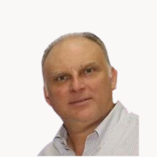

About us
Principals

Walter Abadi FOUNDERCo-founded Grupo Silaba in 1991 and led it for over three decades, building Panama’s largest multi-brand auto importer. Studied Electronic Engineering at Wentworth Institute of Technology in Boston.
Co-founder and CEO of Tafi, the WhatsApp-native consumer credit platform expanding financial access in Panama. Studied at Quality Leadership University in Panama City.
Co-founder and COO of Tafi, where he leads day-to-day operations. Began his studies in law before fintech revealed a calling for data engineering — a discipline he continues to pursue formally today.
Grupo Silaba
In 1991, Walter and Jacobo Abadi partnered with Jack and Ezra Silvera. Sil from Silvera, Aba from Abadi — Grupo Silaba grew across three decades into Panama’s largest multi-brand auto importer.
The partners open their first showroom in Panama City. The early years are anchored in Volvo and Subaru; expansion soon follows to Chiriquí with two more showrooms.
GM grants Grupo Silaba exclusive rights to Chevrolet and Cadillac in Panama. The company moves into a purpose-built 6,000 sqm headquarters.
Kia distribution is acquired from Ricardo Pérez. A new showroom opens on Vía Transístmica.
Mazda joins the portfolio under an exclusive distribution agreement. Three new showrooms open, including the flagship at Calle 50.
A modernization decade: the FIAS financing platform launches, a new Parts Distribution Center opens, and Grupo Silaba introduces the first online vehicle buying platform in Central America.
A used & certified vehicles division opens. Niu electric motorcycles arrive in Panama.
Sojitz Corporation, a Japanese trading conglomerate, acquires the company. The family chapter in Panama’s auto sector closes after 33 years.